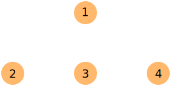
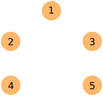
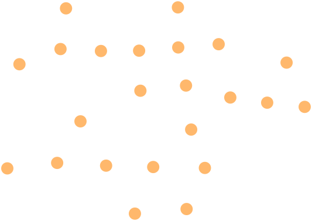
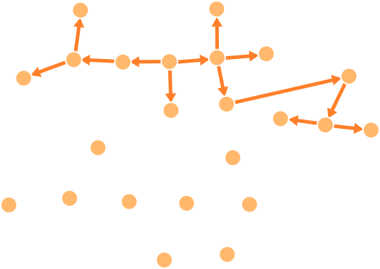

CS3460: Competitive Programming
Graphs I
Graphs (Networks)
- A graph is a collection of nodes (aka, vertices) and edges. Each edge joins a pair of vertices. Nodes and edges can have weights/costs.
- Graphs can be directed or undirected, referring to whether or not the edges have a direction. By default, "graph" usually means "undirected graph."
- Graphs are very common data structures because they are extremely useful at modeling a wide range of problems and applications.
Graph Representations
An adjacency matrix (ideal for dense graphs)

1 2 3 4
+--------
1 | 0 1 0 0
2 | 0 0 1 0
3 | 1 0 0 1
4 | 0 0 1 0
Graph Representations
An adjacency list (ideal for sparse graphs)

1: 2 3
2: 1 3 4
3: 1 2 4 5
4: 2 3 5
5: 3 4
Unless otherwise stated, we will assume our graphs are represented using adjacency lists.
Simple Connectivity Questions
- Some of the most fundamental graph questions related to connectivity:
- Are nodes $i$ and $j$ connected by some path?
- If so, determine such a path.
- In a digraph, is there a directed path from $i$ to $j$?
- Does a (directed) graph have a (directed) cycle?
- Partition a graph into its connected components.
- Partition a digraph into its strongly connected components.
We can answer all of these questions in $O(n)$ using depth-first search.
Depth-First Search (DFS)
dfs_visit(i):
visited[i] = True
for each j such that (i,j) is an edge:
if visited[j] is False:
predecessor[j] = i
dfs_visit(j)
full_dfs():
for each i: predecessor[i] = null, visited[i] = False
for each i: if visited[i] is False: dfs_visit(i)
- Works in directed and undirected graphs.
- full_dfs() takes $O(m + n)$ — spends $O(1)$ on each node and edge
Depth-First Search (DFS)

Depth-First Search (DFS)

Depth-First Search (DFS)
- full_dfs() gives us an easy way to partition an undirected graph into its connected components.
- The predecessor pointers define what is called a depth-first search tree.
- To find a path from $i$ to $j$ (if such a path exists):
- Initialize predecessor and visited values for all nodes.
- Call dfs_visit(i).
- Follow predecessor pointers backwards from $j$ to $i$
- How could we use this to find a path between any two nodes with only one call to full_dfs()?
Breadth-First Search (BFS)
- Depth-first search (DFS) dives as deeply as possible into a graph until it can't go any further, then branches upon backtracking.
- By contrast, a breadth-first search starting at some source node $s$ will visit $s$, then all nodes one step away from $s$, then all nodes two steps away from $s$, and so on until all nodes are reached.
- Like DFS, we can also use BFS to find connected components or answer "find a path from $i$ to $j$" queries.
- Unlike DFS, breadth-first search finds a path from $i$ to $j$ having the fewest edges.
Breadth-First Search (BFS)
bfs(s):
for all nodes i:
pred[i] = null
dist[i] = +inf
Q = {s}
dist[s] = 0
while Q is nonempty:
i = Q.remove()
for all nodes j for which (i,j) is an edge:
pred[j] = i
dist[j] = dist[i] + 1
Q.add(j)
If $Q$ is replaced with a stack instead of a FIFO queue,
this is just depth-first search!